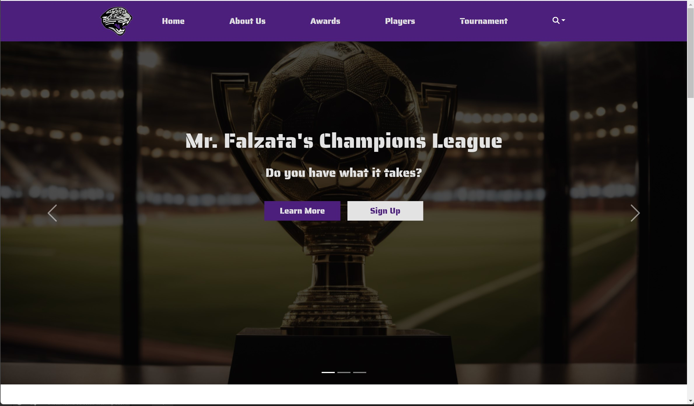
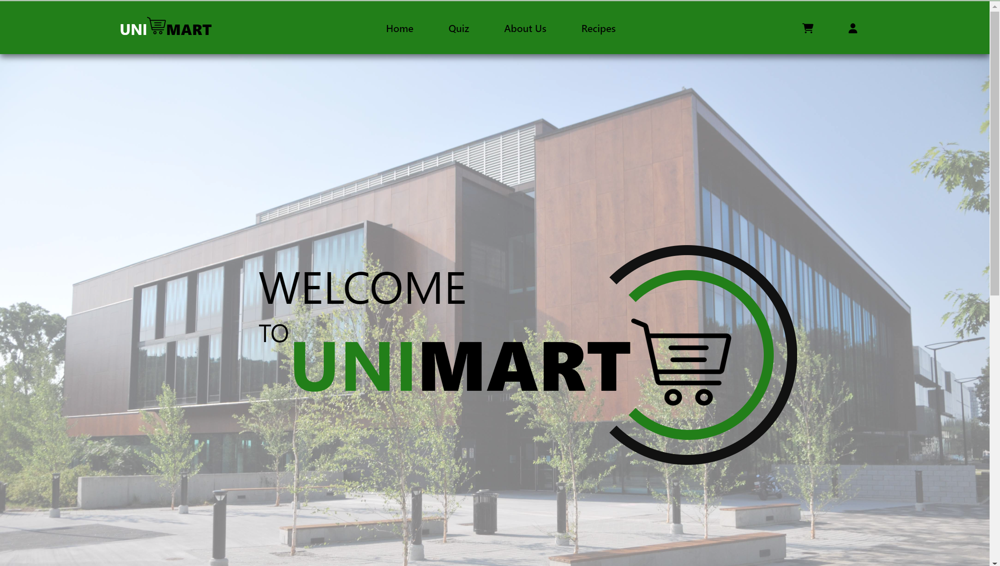

Projects

MFCL Website
The MFCL was a site Developed for a physical education teacher to feature his students' journey in his classroom including highlights, statistics satirical content. It was done using Bootstrap and JavaScript and it is live and fully functional!
Learn More

Uni Mart Website
Unimart is a project developed for class that consists of a system to facilitate grocery shopping for students attending the U of T campus. I developed the demo of a site using some programming tools.
Learn More
Sofia's Tea Website
This site is a static demo of a bakery. This project was developed as a class project and its main objective was to mimic the structure of an existing website as accurately as possible but replace the existing information with media content of our own.
Learn More